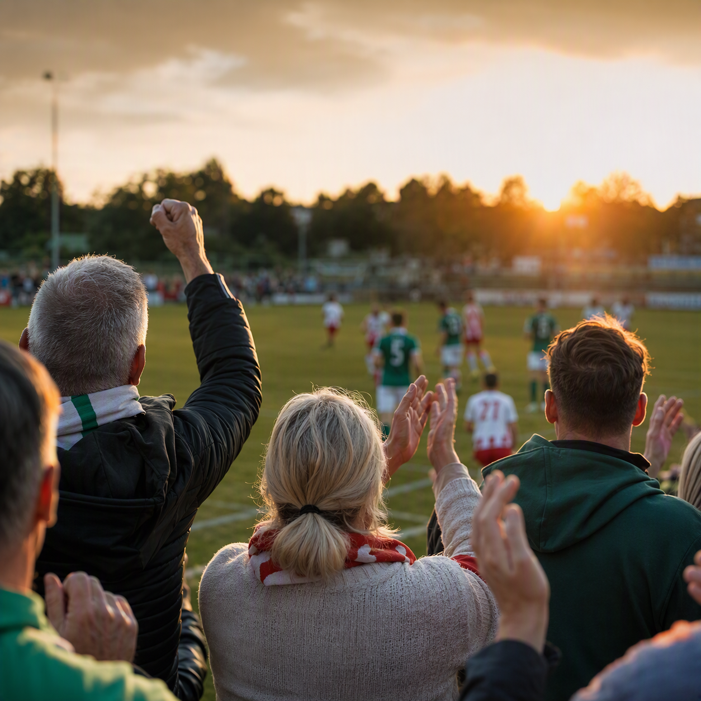
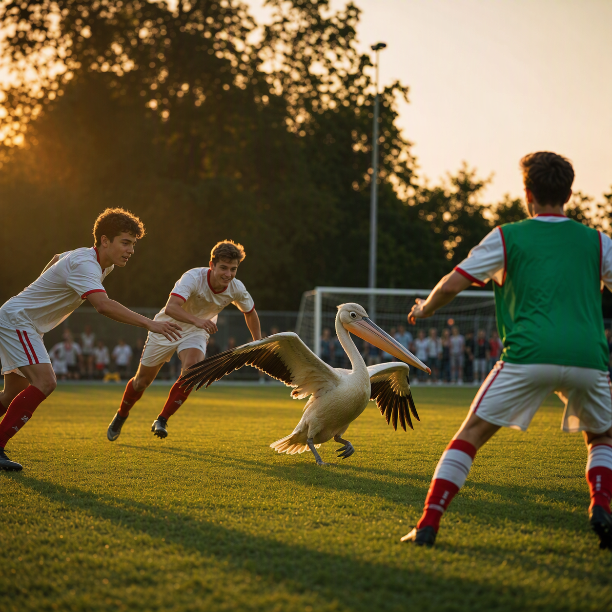
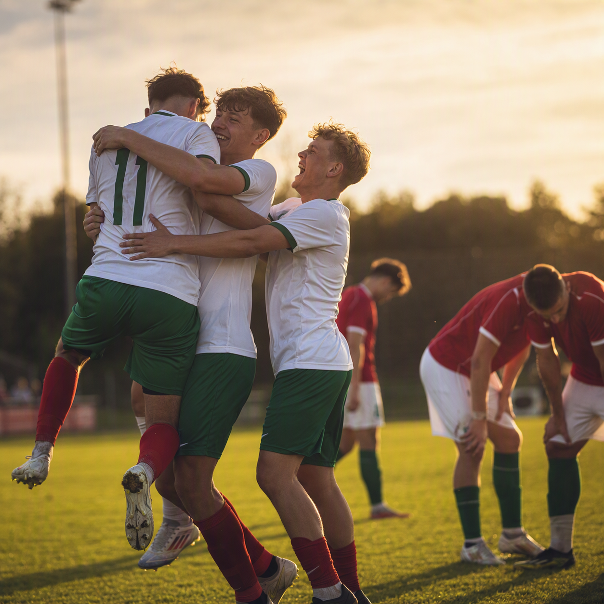
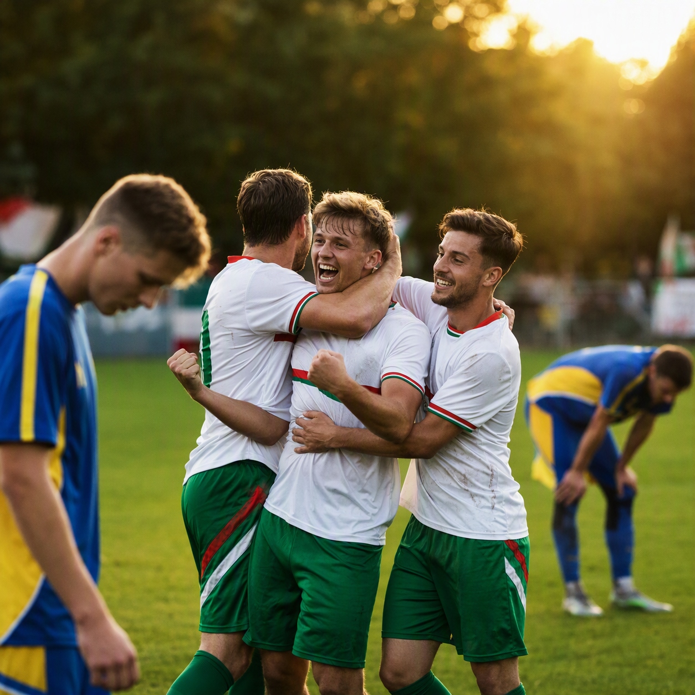

Aktuelles
Beispielseite für eingehende Vereinsinhalte. Die folgenden vier Boxen zeigen, wie eingereichte E-Mail-Beiträge als gestylte Content-Uploads im Frontend erscheinen könnten.
Jeder Beitrag enthält ein Bild links, einen klaren Titel und einen Textbereich, der rechts und unterhalb des Bildes fließend um die Bildkante läuft.

Sommernachmittag am Platz
Die Mannschaft und die Familie haben den Nachmittag gemeinsam auf dem Trainingsgelände verbracht. Die Stimmung war gut, die Energie deutlich spürbar und die Vorbereitung auf die nächsten Spiele steht bereits in den Startlöchern.
Für den Förderverein ist so ein Moment typisch: viele Menschen, ein gemeinsames Ziel und ein sichtbarer Eindruck von Zusammenhalt im Verein.

Gemeinsam vor dem Anpfiff
Vor dem Heimspiel stand die Halle voller Erwartung. Fans, Eltern, Spieler und Helfer trafen sich ein paar Minuten vor dem Start und tauschten sich über die Woche und die Ziele der kommenden Begegnung aus.
Solche Momente zeigen, wie wichtig die Rolle des Fördervereins für den Vereinsalltag und die sportliche Stimmung ist.

Training mit Teamgeist
Die jüngeren Spieler trainierten mit viel Einsatz, und die Begleitpersonen im Umfeld des Vereins unterstützten die Session mit positiver Energie. Die Atmosphäre war locker, aber konzentriert – genau die Mischung, die für eine gute Vorbereitung wichtig ist.
Die Idee des Uploads ist hier besonders gut sichtbar: Bild und Text bleiben in einer klaren, professionellen Struktur, aber die emotionale Wirkung bleibt erhalten.

Mit Herz für den Verein
Im Fokus standen die Menschen hinter dem Spielbetrieb: Helfer, Fans und Verantwortliche, die auch in ruhigen Phasen viel für den Alltag und die Zukunft des Vereins leisten. Das Beispiel zeigt, wie persönlicher, echter Vereinscontent in ein festes Layout übertragen werden kann.
Die Gestaltung lässt die Beiträge klar, zugänglich und hochwertig wirken, ohne den echten Charakter der eingereichten Inhalte zu verlieren.